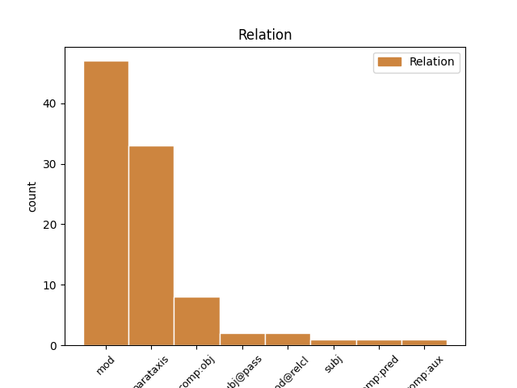
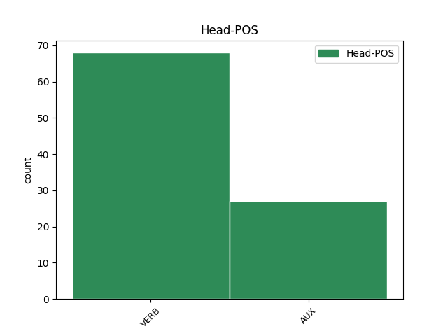
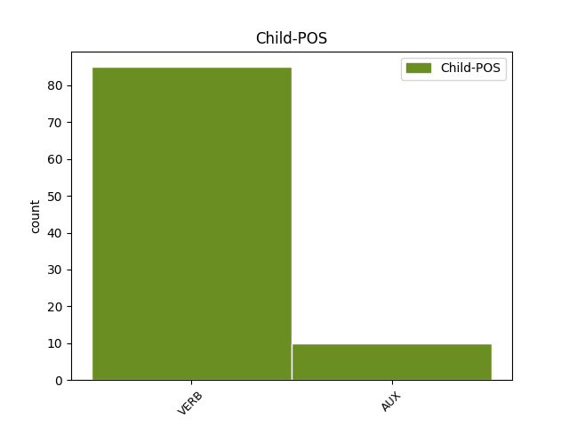

Distribution of features within this leaf



Agreement Rules sorted by frequency.
- When the dependent token is the modifer(mod) of the head token,
1 Όπως _ _ _ _ 0 _ _ _
2 αναφέρει αναφέρω VERB VERB Aspect=Imp|Mood=Ind|Number=Sing|Person=3|Tense=Pres|VerbForm=Fin|Voice=Act 23 mod _ _
3 η _ _ _ _ 0 _ _ _
4 Εθνική _ _ _ _ 0 _ _ _
5 Μετεωρολογική _ _ _ _ 0 _ _ _
6 Υπηρεσία _ _ _ _ 0 _ _ _
7 , _ _ _ _ 0 _ _ _
8 οι _ _ _ _ 0 _ _ _
9 Πολιτείες _ _ _ _ 0 _ _ _
10 Μισισιπή _ _ _ _ 0 _ _ _
11 , _ _ _ _ 0 _ _ _
12 Αλαμπάμα _ _ _ _ 0 _ _ _
13 και _ _ _ _ 0 _ _ _
14 Λουιζιάνα _ _ _ _ 0 _ _ _
15 που _ _ _ _ 0 _ _ _
16 βρίσκονται _ _ _ _ 0 _ _ _
17 σ _ _ _ _ 0 _ _ _
18 τον _ _ _ _ 0 _ _ _
19 Κόλπο _ _ _ _ 0 _ _ _
20 του _ _ _ _ 0 _ _ _
21 Μεξικού _ _ _ _ 0 _ _ _
22 , _ _ _ _ 0 _ _ _
23 παραμένουν παραμένω VERB VERB Aspect=Imp|Mood=Ind|Number=Plur|Person=3|Tense=Pres|VerbForm=Fin|Voice=Act 0 _ _ _
24 υπό _ _ _ _ 0 _ _ _
25 την _ _ _ _ 0 _ _ _
26 απειλή _ _ _ _ 0 _ _ _
27 ανεμοστρόβιλων _ _ _ _ 0 _ _ _
28 , _ _ _ _ 0 _ _ _
29 ισχυρών _ _ _ _ 0 _ _ _
30 ανέμων _ _ _ _ 0 _ _ _
31 και _ _ _ _ 0 _ _ _
32 έντονης _ _ _ _ 0 _ _ _
33 χαλαζόπτωσης _ _ _ _ 0 _ _ _
34 . _ _ _ _ 0 _ _ _
1 Ωστόσο _ _ _ _ 0 _ _ _
2 , _ _ _ _ 0 _ _ _
3 ο _ _ _ _ 0 _ _ _
4 Εισαγγελέας _ _ _ _ 0 _ _ _
5 Εφετών _ _ _ _ 0 _ _ _
6 θεώρησε _ _ _ _ 0 _ _ _
7 ότι _ _ _ _ 0 _ _ _
8 , _ _ _ _ 0 _ _ _
9 και _ _ _ _ 0 _ _ _
10 εδώ _ _ _ _ 0 _ _ _
11 παραθέτω παραθέτω VERB VERB Aspect=Imp|Mood=Ind|Number=Sing|Person=1|Tense=Pres|VerbForm=Fin|Voice=Act 30 parataxis _ _
12 κατά _ _ _ _ 0 _ _ _
13 λέξη _ _ _ _ 0 _ _ _
14 , _ _ _ _ 0 _ _ _
15 " _ _ _ _ 0 _ _ _
16 αντίθετα _ _ _ _ 0 _ _ _
17 με _ _ _ _ 0 _ _ _
18 την _ _ _ _ 0 _ _ _
19 εκτίμηση _ _ _ _ 0 _ _ _
20 του _ _ _ _ 0 _ _ _
21 άλλου _ _ _ _ 0 _ _ _
22 Εισαγγελέα _ _ _ _ 0 _ _ _
23 , _ _ _ _ 0 _ _ _
24 η _ _ _ _ 0 _ _ _
25 παρούσα _ _ _ _ 0 _ _ _
26 αίτηση _ _ _ _ 0 _ _ _
27 άρσης _ _ _ _ 0 _ _ _
28 της _ _ _ _ 0 _ _ _
29 ασυλίας _ _ _ _ 0 _ _ _
30 δικαιολογεί δικαιολογώ VERB VERB Aspect=Imp|Mood=Ind|Number=Sing|Person=3|Tense=Pres|VerbForm=Fin|Voice=Act 0 _ _ _
31 επιφυλάξεις _ _ _ _ 0 _ _ _
32 " _ _ _ _ 0 _ _ _
33 . _ _ _ _ 0 _ _ _
1 " _ _ _ _ 0 _ _ _
2 Όλοι _ _ _ _ 0 _ _ _
3 εδώ _ _ _ _ 0 _ _ _
4 είναι _ _ _ _ 0 _ _ _
5 τρομαγμένοι _ _ _ _ 0 _ _ _
6 γιατί _ _ _ _ 0 _ _ _
7 κανείς _ _ _ _ 0 _ _ _
8 δεν _ _ _ _ 0 _ _ _
9 ξέρει ξέρω VERB VERB Aspect=Imp|Mood=Ind|Number=Sing|Person=3|Tense=Pres|VerbForm=Fin|Voice=Act 0 _ _ _
10 τι _ _ _ _ 0 _ _ _
11 πρόκειται πρόκειται VERB VERB Aspect=Imp|Mood=Ind|Number=Sing|Person=3|Tense=Pres|VerbForm=Fin|Voice=Pass 9 comp:obj _ _
12 να _ _ _ _ 0 _ _ _
13 συμβεί _ _ _ _ 0 _ _ _
14 " _ _ _ _ 0 _ _ _
15 , _ _ _ _ 0 _ _ _
16 λέει _ _ _ _ 0 _ _ _
17 ο _ _ _ _ 0 _ _ _
18 Γιούντορ _ _ _ _ 0 _ _ _
19 , _ _ _ _ 0 _ _ _
20 κάτοικος _ _ _ _ 0 _ _ _
21 του _ _ _ _ 0 _ _ _
22 Μπαχτσισαράι _ _ _ _ 0 _ _ _
23 . _ _ _ _ 0 _ _ _
1 Αν _ _ _ _ 0 _ _ _
2 οι _ _ _ _ 0 _ _ _
3 αρχές _ _ _ _ 0 _ _ _
4 του _ _ _ _ 0 _ _ _
5 Ελσίνκι _ _ _ _ 0 _ _ _
6 είχαν _ _ _ _ 0 _ _ _
7 πει _ _ _ _ 0 _ _ _
8 ότι _ _ _ _ 0 _ _ _
9 θέλουν _ _ _ _ 0 _ _ _
10 100 _ _ _ _ 0 _ _ _
11 λεωφορεία _ _ _ _ 0 _ _ _
12 που _ _ _ _ 0 _ _ _
13 να _ _ _ _ 0 _ _ _
14 κινούνται _ _ _ _ 0 _ _ _
15 με _ _ _ _ 0 _ _ _
16 φυσικό _ _ _ _ 0 _ _ _
17 αέριο _ _ _ _ 0 _ _ _
18 και _ _ _ _ 0 _ _ _
19 αυτή _ _ _ _ 0 _ _ _
20 είναι _ _ _ _ 0 _ _ _
21 η _ _ _ _ 0 _ _ _
22 σύμβαση _ _ _ _ 0 _ _ _
23 , _ _ _ _ 0 _ _ _
24 τότε _ _ _ _ 0 _ _ _
25 εντάξει _ _ _ _ 0 _ _ _
26 , _ _ _ _ 0 _ _ _
27 αν _ _ _ _ 0 _ _ _
28 αυτό _ _ _ _ 0 _ _ _
29 είναι είμαι AUX AUX Aspect=Imp|Mood=Ind|Number=Sing|Person=3|Tense=Pres|VerbForm=Fin|Voice=Pass 0 _ _ _
30 που _ _ _ _ 0 _ _ _
31 θέλουν θέλω VERB VERB Aspect=Imp|Mood=Ind|Number=Plur|Person=3|Tense=Pres|VerbForm=Fin|Voice=Act 29 comp:pred _ SpaceAfter=No
32 . _ _ _ _ 0 _ _ _
1 Το _ _ _ _ 0 _ _ _
2 εκεί _ _ _ _ 0 _ _ _
3 έξω _ _ _ _ 0 _ _ _
4 είναι είμαι AUX AUX Aspect=Imp|Mood=Ind|Number=Sing|Person=3|Tense=Pres|VerbForm=Fin|Voice=Pass 0 _ _ _
5 που _ _ _ _ 0 _ _ _
6 μας _ _ _ _ 0 _ _ _
7 ενδιαφέρει ενδιαφέρω VERB VERB Aspect=Imp|Mood=Ind|Number=Sing|Person=3|Tense=Pres|VerbForm=Fin|Voice=Act 4 subj _ _
8 πραγματικά _ _ _ _ 0 _ _ _
9 . _ _ _ _ 0 _ _ _
1 το _ _ _ _ 0 _ _ _
2 ένα _ _ _ _ 0 _ _ _
3 το _ _ _ _ 0 _ _ _
4 επισημάνατε _ _ _ _ 0 _ _ _
5 , _ _ _ _ 0 _ _ _
6 και _ _ _ _ 0 _ _ _
7 είναι είμαι AUX AUX Aspect=Imp|Mood=Ind|Number=Sing|Person=3|Tense=Pres|VerbForm=Fin|Voice=Pass 9 comp:aux _ _
8 ότι _ _ _ _ 0 _ _ _
9 πρέπει πρέπει AUX AUX Aspect=Imp|Mood=Ind|Number=Sing|Person=3|Tense=Pres|VerbForm=Fin|Voice=Act 0 _ _ _
10 οι _ _ _ _ 0 _ _ _
11 συζητήσεις _ _ _ _ 0 _ _ _
12 μας _ _ _ _ 0 _ _ _
13 να _ _ _ _ 0 _ _ _
14 γίνουν _ _ _ _ 0 _ _ _
15 πιο _ _ _ _ 0 _ _ _
16 ζωντανές _ _ _ _ 0 _ _ _
17 και _ _ _ _ 0 _ _ _
18 ενδιαφέρουσες _ _ _ _ 0 _ _ _
19 . _ _ _ _ 0 _ _ _
1 Κύριε _ _ _ _ 0 _ _ _
2 Πρόεδρε _ _ _ _ 0 _ _ _
3 , _ _ _ _ 0 _ _ _
4 οι _ _ _ _ 0 _ _ _
5 υπό _ _ _ _ 0 _ _ _
6 συζήτηση _ _ _ _ 0 _ _ _
7 υποθέσεις _ _ _ _ 0 _ _ _
8 αφορούν αφορώ VERB VERB Aspect=Imp|Mood=Ind|Number=Plur|Person=3|Tense=Pres|VerbForm=Fin|Voice=Act 0 _ _ _
9 πολύ _ _ _ _ 0 _ _ _
10 σοβαρές _ _ _ _ 0 _ _ _
11 κατηγορίες _ _ _ _ 0 _ _ _
12 , _ _ _ _ 0 _ _ _
13 οι _ _ _ _ 0 _ _ _
14 οποίες _ _ _ _ 0 _ _ _
15 βαρύνουν βαραίνω VERB VERB Aspect=Imp|Mood=Ind|Number=Plur|Person=3|Tense=Pres|VerbForm=Fin|Voice=Act 8 mod@relcl _ _
16 δύο _ _ _ _ 0 _ _ _
17 βουλευτές _ _ _ _ 0 _ _ _
18 του _ _ _ _ 0 _ _ _
19 Σώματος _ _ _ _ 0 _ _ _
20 και _ _ _ _ 0 _ _ _
21 αναφέρονται _ _ _ _ 0 _ _ _
22 σ _ _ _ _ 0 _ _ _
23 την _ _ _ _ 0 _ _ _
24 πρώτη _ _ _ _ 0 _ _ _
25 σελίδα _ _ _ _ 0 _ _ _
26 της _ _ _ _ 0 _ _ _
27 αιτιολογικής _ _ _ _ 0 _ _ _
28 έκθεσης _ _ _ _ 0 _ _ _
29 της _ _ _ _ 0 _ _ _
30 έκθεσής _ _ _ _ 0 _ _ _
31 μου _ _ _ _ 0 _ _ _
32 , _ _ _ _ 0 _ _ _
33 σ _ _ _ _ 0 _ _ _
34 την _ _ _ _ 0 _ _ _
35 οποία _ _ _ _ 0 _ _ _
36 συνιστώ _ _ _ _ 0 _ _ _
37 σ _ _ _ _ 0 _ _ _
38 τους _ _ _ _ 0 _ _ _
39 συναδέλφους _ _ _ _ 0 _ _ _
40 να _ _ _ _ 0 _ _ _
41 ρίξουν _ _ _ _ 0 _ _ _
42 μια _ _ _ _ 0 _ _ _
43 ματιά _ _ _ _ 0 _ _ _
44 . _ _ _ _ 0 _ _ _
Disagree Examples:
1 Με _ _ _ _ 0 _ _ _
2 κατηγόρησαν _ _ _ _ 0 _ _ _
3 ότι _ _ _ _ 0 _ _ _
4 συμφώνησα συμφωνώ VERB VERB Aspect=Perf|Mood=Ind|Number=Sing|Person=1|Tense=Past|VerbForm=Fin|Voice=Act 0 _ _ _
5 όσον _ _ _ _ 0 _ _ _
6 αφορά αφορώ VERB VERB Aspect=Imp|Mood=Ind|Number=Sing|Person=3|Tense=Pres|VerbForm=Fin|Voice=Act 4 mod _ _
7 σ _ _ _ _ 0 _ _ _
8 το _ _ _ _ 0 _ _ _
9 ευρωπαϊκό _ _ _ _ 0 _ _ _
10 ένταλμα _ _ _ _ 0 _ _ _
11 συλλήψεως _ _ _ _ 0 _ _ _
12 , _ _ _ _ 0 _ _ _
13 τη _ _ _ _ 0 _ _ _
14 στιγμή _ _ _ _ 0 _ _ _
15 που _ _ _ _ 0 _ _ _
16 υποστηρίζω _ _ _ _ 0 _ _ _
17 σθεναρά _ _ _ _ 0 _ _ _
18 τα _ _ _ _ 0 _ _ _
19 ατομικά _ _ _ _ 0 _ _ _
20 δικαιώματα _ _ _ _ 0 _ _ _
21 . _ _ _ _ 0 _ _ _
1 Κατά _ _ _ _ 0 _ _ _
2 τα _ _ _ _ 0 _ _ _
3 βυζαντινά _ _ _ _ 0 _ _ _
4 χρόνια _ _ _ _ 0 _ _ _
5 , _ _ _ _ 0 _ _ _
6 το _ _ _ _ 0 _ _ _
7 κέντρο _ _ _ _ 0 _ _ _
8 λατρείας _ _ _ _ 0 _ _ _
9 μεταφέρθηκε μεταφέρω VERB VERB Aspect=Perf|Mood=Ind|Number=Sing|Person=3|Tense=Past|VerbForm=Fin|Voice=Pass 0 _ _ _
10 σ _ _ _ _ 0 _ _ _
11 τη _ _ _ _ 0 _ _ _
12 θέση _ _ _ _ 0 _ _ _
13 μιας _ _ _ _ 0 _ _ _
14 νεκρόπολης _ _ _ _ 0 _ _ _
15 , _ _ _ _ 0 _ _ _
16 όπου _ _ _ _ 0 _ _ _
17 σήμερα _ _ _ _ 0 _ _ _
18 διασώζονται διασώζω VERB VERB Aspect=Imp|Mood=Ind|Number=Plur|Person=3|Tense=Pres|VerbForm=Fin|Voice=Pass 9 mod _ _
19 δύο _ _ _ _ 0 _ _ _
20 παλαιοχριστιανικές _ _ _ _ 0 _ _ _
21 εκκλησίες _ _ _ _ 0 _ _ _
22 . _ _ _ _ 0 _ _ _
1 Γι' _ _ _ _ 0 _ _ _
2 αυτό _ _ _ _ 0 _ _ _
3 το _ _ _ _ 0 _ _ _
4 λόγο _ _ _ _ 0 _ _ _
5 - _ _ _ _ 0 _ _ _
6 όπως _ _ _ _ 0 _ _ _
7 είπατε λέγω VERB VERB Aspect=Perf|Mood=Ind|Number=Plur|Person=2|Tense=Past|VerbForm=Fin|Voice=Act 10 mod _ _
8 - _ _ _ _ 0 _ _ _
9 μας _ _ _ _ 0 _ _ _
10 είναι είμαι AUX AUX Aspect=Imp|Mood=Ind|Number=Sing|Person=3|Tense=Pres|VerbForm=Fin|Voice=Pass 0 _ _ _
11 δύσκολο _ _ _ _ 0 _ _ _
12 να _ _ _ _ 0 _ _ _
13 δεχτούμε _ _ _ _ 0 _ _ _
14 τον _ _ _ _ 0 _ _ _
15 τρόπο _ _ _ _ 0 _ _ _
16 με _ _ _ _ 0 _ _ _
17 τον _ _ _ _ 0 _ _ _
18 οποίο _ _ _ _ 0 _ _ _
19 λήφθηκαν _ _ _ _ 0 _ _ _
20 σ _ _ _ _ 0 _ _ _
21 τις _ _ _ _ 0 _ _ _
22 27_Δεκεμβρίου _ _ _ _ 0 _ _ _
23 οι _ _ _ _ 0 _ _ _
24 αποφάσεις _ _ _ _ 0 _ _ _
25 σχετικά _ _ _ _ 0 _ _ _
26 με _ _ _ _ 0 _ _ _
27 τα _ _ _ _ 0 _ _ _
28 τέσσερα _ _ _ _ 0 _ _ _
29 νομοθετικά _ _ _ _ 0 _ _ _
30 μέσα _ _ _ _ 0 _ _ _
31 για _ _ _ _ 0 _ _ _
32 τη _ _ _ _ 0 _ _ _
33 δημιουργία _ _ _ _ 0 _ _ _
34 ενός _ _ _ _ 0 _ _ _
35 καταλόγου _ _ _ _ 0 _ _ _
36 τρομοκρατών _ _ _ _ 0 _ _ _
37 σ _ _ _ _ 0 _ _ _
38 την _ _ _ _ 0 _ _ _
39 Ευρωπαϊκή _ _ _ _ 0 _ _ _
40 Ένωση _ _ _ _ 0 _ _ _
41 . _ _ _ _ 0 _ _ _
1 Όπως _ _ _ _ 0 _ _ _
2 ανέφερε αναφέρω VERB VERB Aspect=Perf|Mood=Ind|Number=Sing|Person=3|Tense=Past|VerbForm=Fin|Voice=Act 25 mod _ _
3 η _ _ _ _ 0 _ _ _
4 Ανίτα _ _ _ _ 0 _ _ _
5 Ούντερλιν _ _ _ _ 0 _ _ _
6 , _ _ _ _ 0 _ _ _
7 Επικεφαλής _ _ _ _ 0 _ _ _
8 των _ _ _ _ 0 _ _ _
9 Υπηρεσιών _ _ _ _ 0 _ _ _
10 του _ _ _ _ 0 _ _ _
11 Ερυθρού _ _ _ _ 0 _ _ _
12 Σταυρού _ _ _ _ 0 _ _ _
13 για _ _ _ _ 0 _ _ _
14 την _ _ _ _ 0 _ _ _
15 Ευρώπη _ _ _ _ 0 _ _ _
16 , _ _ _ _ 0 _ _ _
17 " _ _ _ _ 0 _ _ _
18 ο _ _ _ _ 0 _ _ _
19 αυξανόμενος _ _ _ _ 0 _ _ _
20 αριθμός _ _ _ _ 0 _ _ _
21 ατόμων _ _ _ _ 0 _ _ _
22 που _ _ _ _ 0 _ _ _
23 ζητούν _ _ _ _ 0 _ _ _
24 βοήθεια _ _ _ _ 0 _ _ _
25 δείχνει δείχνω VERB VERB Aspect=Imp|Mood=Ind|Number=Sing|Person=3|Tense=Pres|VerbForm=Fin|Voice=Act 0 _ _ _
26 το _ _ _ _ 0 _ _ _
27 μέγεθος _ _ _ _ 0 _ _ _
28 της _ _ _ _ 0 _ _ _
29 οικονομικής _ _ _ _ 0 _ _ _
30 κρίσης _ _ _ _ 0 _ _ _
31 " _ _ _ _ 0 _ _ _
32 . _ _ _ _ 0 _ _ _
1 Η _ _ _ _ 0 _ _ _
2 ίδια _ _ _ _ 0 _ _ _
3 η _ _ _ _ 0 _ _ _
4 Επιτροπή _ _ _ _ 0 _ _ _
5 κατέδειξε καταδεικνύω VERB VERB Aspect=Perf|Mood=Ind|Number=Sing|Person=3|Tense=Past|VerbForm=Fin|Voice=Act 0 _ _ _
6 σ _ _ _ _ 0 _ _ _
7 τις _ _ _ _ 0 _ _ _
8 δύο _ _ _ _ 0 _ _ _
9 ερμηνευτικές _ _ _ _ 0 _ _ _
10 δηλώσεις _ _ _ _ 0 _ _ _
11 της _ _ _ _ 0 _ _ _
12 πώς _ _ _ _ 0 _ _ _
13 μπορούν μπορώ VERB VERB Aspect=Imp|Mood=Ind|Number=Plur|Person=3|Tense=Pres|VerbForm=Fin|Voice=Act 5 comp:obj _ _
14 σήμερα _ _ _ _ 0 _ _ _
15 να _ _ _ _ 0 _ _ _
16 εφαρμοσθούν _ _ _ _ 0 _ _ _
17 αυτά _ _ _ _ 0 _ _ _
18 τα _ _ _ _ 0 _ _ _
19 περιθώρια _ _ _ _ 0 _ _ _
20 χωρίς _ _ _ _ 0 _ _ _
21 να _ _ _ _ 0 _ _ _
22 υπάρχει _ _ _ _ 0 _ _ _
23 διακριτική _ _ _ _ 0 _ _ _
24 μεταχείριση _ _ _ _ 0 _ _ _
25 . _ _ _ _ 0 _ _ _